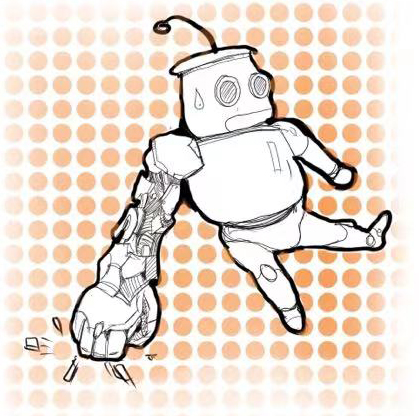
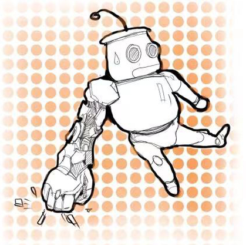

Self-driving cars will inevitably be a trend in the future, which can help people reduce traffic accidents. Self-driving cars need the support of algorithms and sensor information to be sensitive to road obstacles. The author Alberto Broggi et al. (2015) mentioned that the two sensors of the autopilot aura are static obstacles and dynamic obstacles in the obstacle representative. Obstacles represent the first of a critical aspect: static obstacles that can also be mapped are pretty straightforward to manage, but robust perception algorithms are mandatory in dynamic obstacles. If obstacles behavior can not be predicted, perception must be very sharp, and the path planner must also consider this issue.

 
